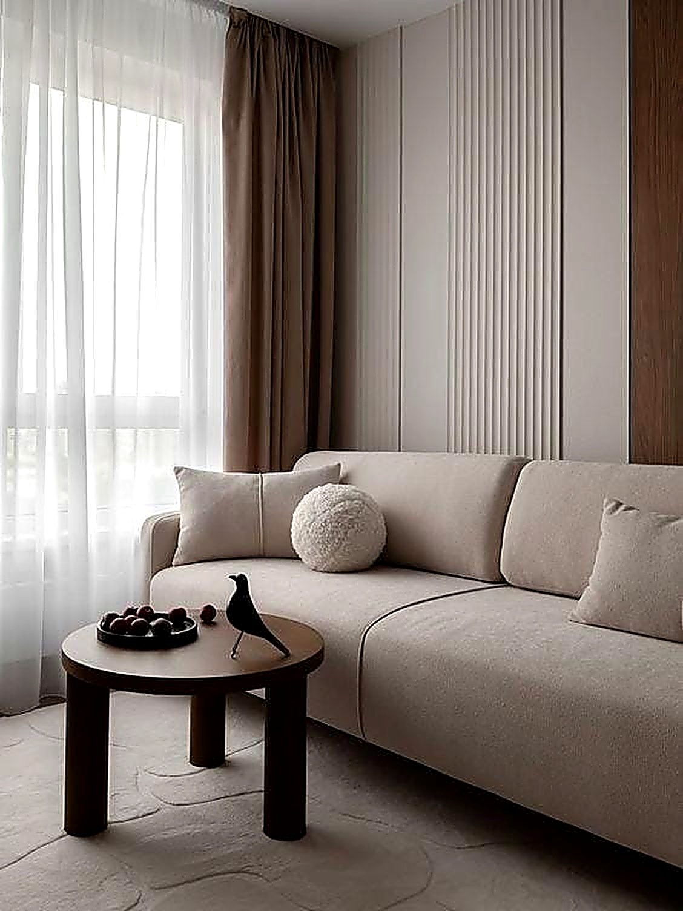
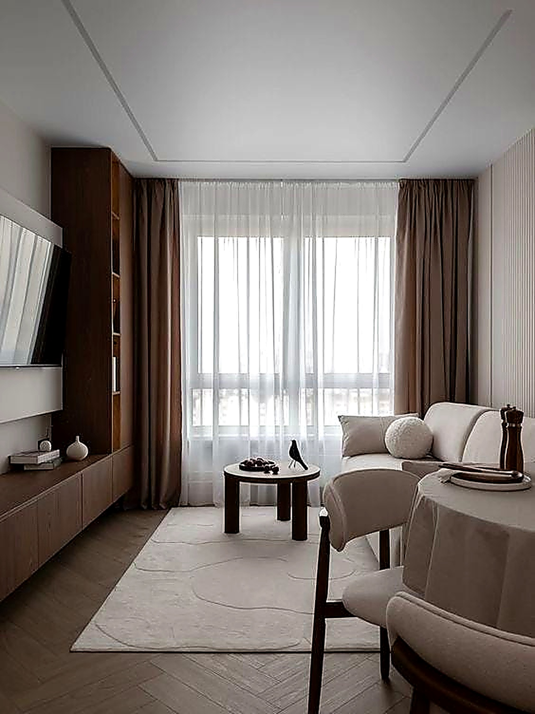
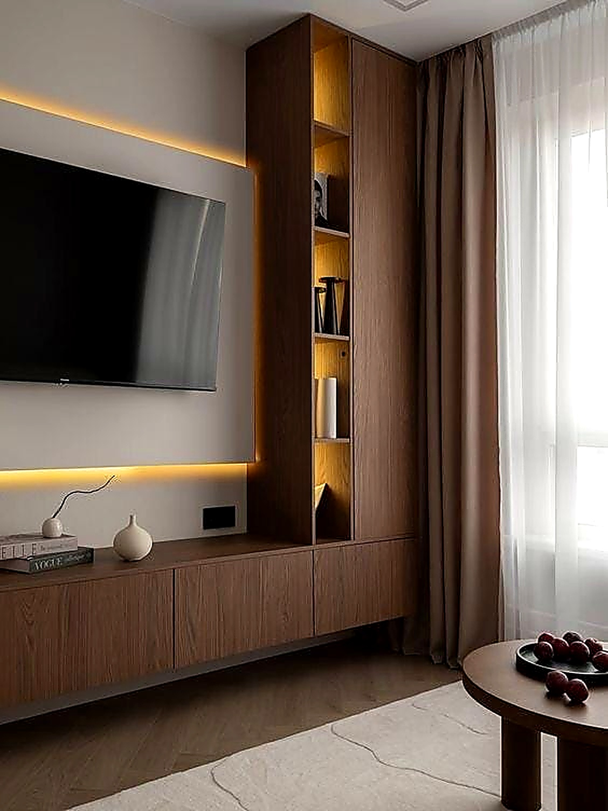

An ode to restraint — where every element earns its place. The Insidestory distils the essence of elegant living into spaces defined by purity of form, a muted palette, and the quiet confidence of empty space.
This project begins with a deliberate act of subtraction. The entry sequence strips away ornament to reveal the architecture itself — smooth, plastered walls in warm ivory meet floors of honed grey limestone, their surfaces absorbing light rather than reflecting it. The effect is one of absolute calm, a decompression chamber between the city outside and the sanctuary within.
The living area is composed around a single anchoring gesture: a low-profile sofa in undyed linen, set against a monolithic wall of micro-cement in a pale oyster tone. There are no competing focal points — the eye is drawn to the proportions of the room itself, to the play of shadow across recessed niches, and to a solitary ceramic vessel atop a blackened steel console.
In the kitchen, the philosophy deepens. Handleless cabinetry in matte warm white dissolves into the walls, while a single slab of Pietra Grey marble serves as both workspace and gathering point. The dining arrangement is elemental: a pale ash table, unadorned, surrounded by sculptural chairs in natural rope weave. Overhead, a single oversized pendant in handblown frosted glass casts a diffused, intimate glow.
The private quarters continue this thread of reductive luxury. Bedrooms are exercises in tonal layering — cream, stone, and sand — with textural interest achieved through raw linen bedding, woven wool throws, and curtains in a gauze-weight cotton that filters sunlight into a soft, golden haze.



